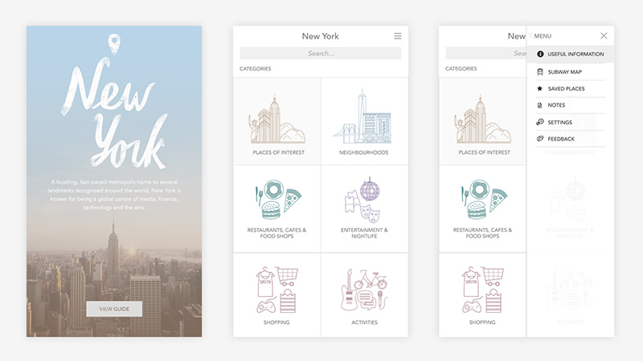
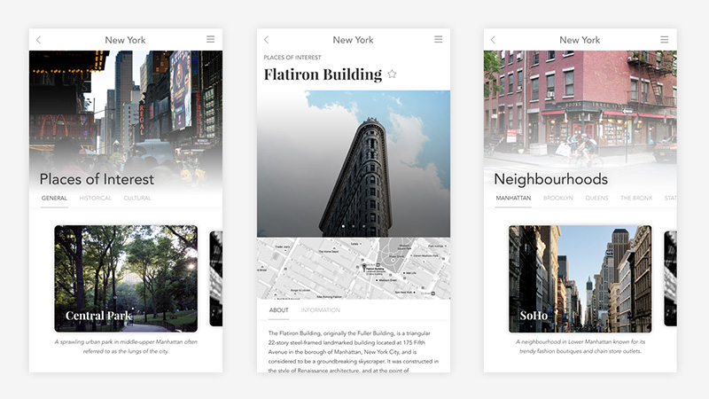

Project Showcase
Selected personal, freelance and hackathon projects
Here are some projects utilising my skills in design and development that I worked on for freelance clients, during hackathons and out of personal interest.

Equity Consulting Group
Website for Equity Consulting Group designed and implemented using Bootstrap 4, Sass and Gulp.js, and Photoshop for editing photos.


New York Travel Guide
Armed with a camera full of photos after returning from a summer break in New York, I was thinking of ways to immortalise my memories of the city. I conceptualised a travel guide mobile app that may come in handy if I ever find myself returning.
The Ridge Magazine
The Ridge Magazine is a student-run publication in National University of Singapore (NUS). As Webmaster and Creative Designer, I started a side project to redevelop the magazine website and make it more navigable and easier to use. My goals were to:- Highlight our content using colours, rich images and white space to create an organisational structure
- Reflect our diversity by categorising content according to desk
- Ensure consistency in browsing experience across devices